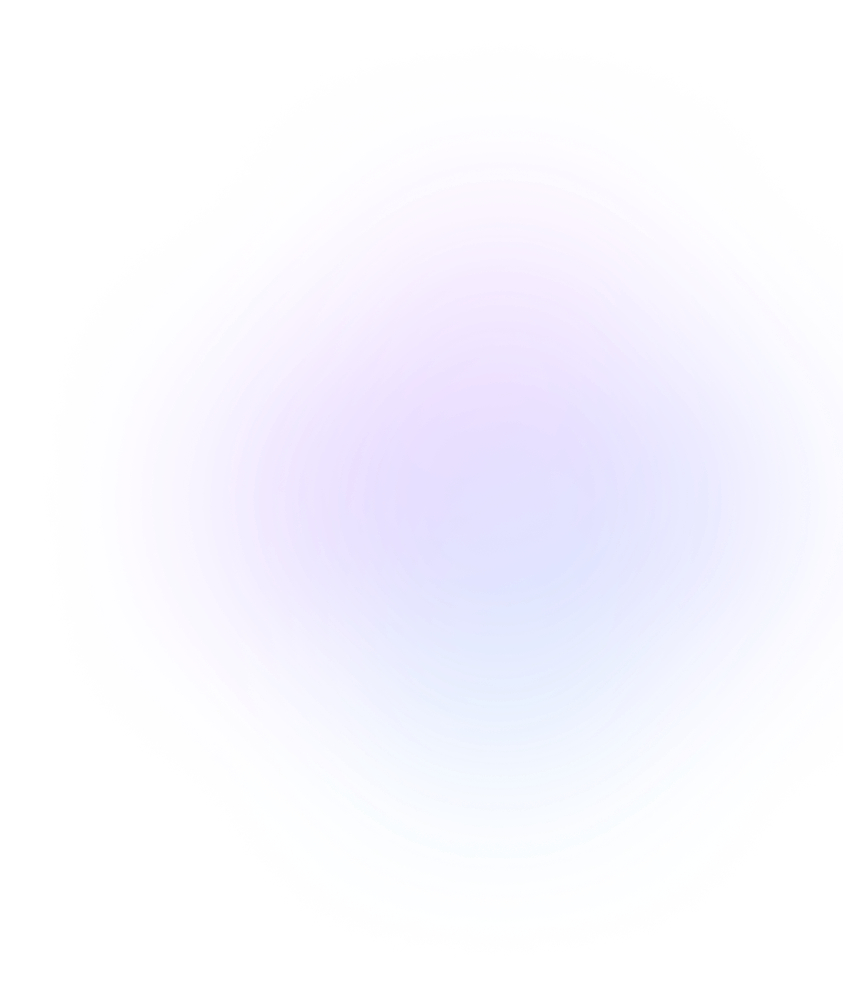

Эндпоинт: GET /metrics (порт 8000)
Метрики приложения
Определены в app/core/metrics.py.
photos_uploaded_total (Counter)
Общее количество загруженных фото. Инкрементируется при успешной загрузке.
http_requests_total (Counter)
Общее количество HTTP запросов. Labels: method, path, status_code. Инкрементируется middleware в main.py.
http_request_duration_seconds (Histogram)
Длительность HTTP запросов. Labels: method, path, status_code. Buckets: [0.01, 0.025, 0.05, 0.1, 0.25, 0.5, 0.75, 1.0, 2.5, 5.0, 10.0].
storage_upload_errors_total (Counter)
Ошибки MinIO. Labels: error_code.
kafka_publish_errors_total (Counter)
Ошибки публикации в Kafka. Labels: topic.
Метрики из БД
Агрегируются в app/integrations/metrics_db.py через прямой SQL.
photo_analysis_completed_total (Counter)
Завершённые анализы по статусу (done/failed).
photo_analysis_failed_total (Counter)
Фото, перешедшие в статус failed.
photo_analysis_duration_seconds (Histogram)
Время от загрузки до завершения анализа. Buckets: [1, 5, 10, 30, 60, 120, +Inf].
analyzer_grpc_errors_total (Counter)
Сумма лишних попыток gRPC (SUM(attempts) - COUNT(done|failed)).
worker_messages_processed_total (Counter)
Обработанные сообщения Worker. Labels: result (success/error).
consumer_lag (Gauge)
Фото, ожидающие обработки (pending + processing).
messages_in_queue (Gauge)
Фото в статусе pending.
Пример вывода /metrics
# HELP http_requests_total Total HTTP requests
# TYPE http_requests_total counter
http_requests_total{method="GET",path="/api/v1/photos/",status_code="200"} 42
http_requests_total{method="POST",path="/api/v1/photos/",status_code="202"} 15
# HELP photos_uploaded_total Total photos uploaded
# TYPE photos_uploaded_total counter
photos_uploaded_total 15
# HELP consumer_lag Photos waiting in queue (pending + processing)
# TYPE consumer_lag gauge
consumer_lag 3
Health Checks
GET /healthz -> {"status": "ok"}
GET /readyz -> {"status": "ok", "checks": {"database": "ok", "storage": "ok"}}